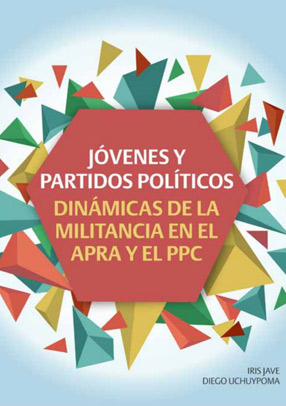
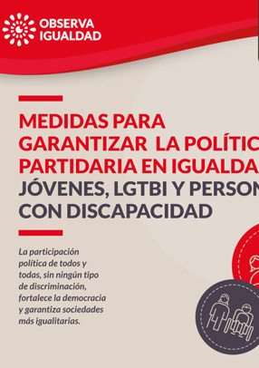

Español
Dirección
Jr. Lampa 946 - Lima
Correo electrónico:
igualdadpolitica@jne.gob.pe
Teléfono
(511) 311 1700 - Anexo: 2106
Observa igualdad
PARTICIPACIÓN POLÍTICA
Mujeres
Jóvenes
Pueblos indígenas
Pueblo afroperuano
Personas con discapacidad
LGTBI
PLANES DE GOBIERNO
ACOSO POLÍTICO
RECURSOS
TIPOS DE MATERIAL
Todos
Artículos
Boletines
Videos
Reportes
Materiales educativos
Libros
Búsqueda avanzada
¿Qué buscas?
Buscar
Participación política de las mujeres en las ERM 2022
Descargar
Cartilla Paridad y Alternancia JNE-ERM 2022
Descargar
Cartilla Cuota de comunidades campesinas y nativas y pueblos originarios
Descargar
Participación política de las mujeres en las EG 2021
Descargar
Agendas por un país con igualdad
Descargar
Personas LGTBI en los planes de gobierno ERM 2018
Descargar
Pueblos Indígenas ERM 2018
Descargar
Mujeres candidatas EMC 2019
Descargar
Infografia indígenas ERM 2018
Descargar
Infografia Voto personas trans JNE
Descargar
Elecciones sin discriminación
Descargar
Cartilla paridad alternancia EG 2021
Descargar
Cartilla acoso político EG 2021
Descargar
Perfil electoral en el Perú
Descargar

Jóvenes y partidos políticos
Descargar
Lineamientos Para Garantizar La Participación Política De Las Personas LGBTI 1
Descargar
Acoso político
Ver Video
Escuela de formación política indígena 1
Ver Video
Escuela de formación política indígena 2
Ver Video
Escuela de formación política indígena 3
Ver Video
Microvideo 1 observa igualdad jóvenes
Ver Video
Microvideo 2 observa igualdad mujeres
Ver Video
Microvideo 3 observa igualdad discapacidad
Ver Video
Video 2 paridad redes
Ver Video
Mi primer voto
Ver Video
Inscripción y cancelación de organizaciones políticas
Ver Video
Reformas electorales 2015 -2020
Ver Video
Sistema electoral
Ver Video
Afrodescendientes como candidatos políticos en el Perú
Descargar
1-CANDIDATURAS AFRO EG2016
Descargar
2-CANDIDATURAS LGTBI 2006_2016
Descargar
3-CANDIDATURAS PERSONAS CON DISCAPACIDAD_ERM2014
Descargar
4-INFORME MEDIOS DE COMUNICACION EG2016
Descargar
6-VULNERACIÓN DERECHOS POLITICOS LGTBI EG2016
Descargar
1-Libro Acoso Político
Descargar
2-Libro LGTBI_Igualdad para construir democracia
Descargar
3-Participación política de mujeres indígenas subnacional Uchuypoma
Descargar
4-Representación política indígena Maritza Paredes
Descargar

Participación política en igualdad Jóvenes, LGTBI y personas con discapacidad
Descargar
Participación política en igualdad Mujeres
Descargar
Participación política en igualdad Pueblos indígenas y afroperuanos
Descargar
Afrodescendientes como candidatos políticos en el Perú-Una mirada a su participación en las elecciones generales del 2016
Descargar
Análisis de los planes de gobierno ERM2018
Descargar
Derecho a la participación política TLGB2015_2016 Promsex
Descargar
INFORME MEDIOS DE COMUNICACION EG2016.PDF
Descargar
Participación política de la juventud afrodescendiente en el Perú Rafael Jorge
Descargar
Participación y representación legislativa de afroperuanos e indígenas Rios Candelaria
Descargar
Retos para la participación política de las mujeres Transparencia
Descargar
VotoTransEleccionesG2016
Descargar